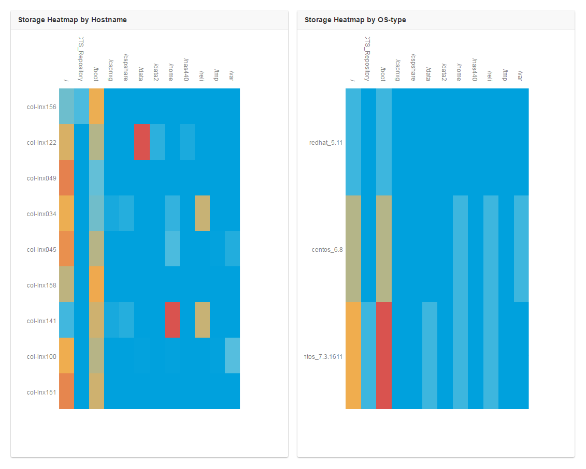

storageHeapMaps
Storage heat maps show what partitions are being used across different type of operating systems. The idea for this came up when I had a certain type of OS that was filling up the boot, so I thought it would be good if I could see a correlation between OS type and partition usage on those OS's.I used puppet to push out a configuration that would setup a cron to run a collection script once an hour. This data is pushed up into elastic search, and then a flask application reads that data and reports on it. The actual graphs are created with the plotly.js javascript library.

pushDisk.py
This is the script that runs hourly and pushes the data back up to elastic search.1 2 3 4 5 6 7 8 9 10 11 12 13 14 15 16 17 18 19 20 21 22 23 24 25 26 27 28 29 30 31 32 33 34 35 36 | import subprocess import os import platform plat = map( lambda x: x.lower(), platform.dist()) if plat[0] == "redhat": plat_name="centos" host = subprocess.Popen(["hostname"], stdout=subprocess.PIPE).communicate()[0].strip() diskData = output = subprocess.Popen(["df", "-Ph" ], stdout=subprocess.PIPE).communicate()[0] ret = [] for line in diskData.split('\n'): items = line.split() if len(items) == 6 and not items[5].find("/mnt") == 0 and not items[5].find("/var/lib/docker") == 0 and not items[5].find("/dev") ==0 and not items[5].find("/sys") == 0 and not items[5].find("/run") ==0: ret.append( """{"Device": "%s", "percent": %s}""" % (items[5], items[4].replace('%','') )) cmd= """ curl -XPOST "http://esearch.rest.of.url:9200/inventory/disk/%s" -d ' { "host": "%s", "os": "%s", "data": [%s] } ' """ % (host, host, plat[0] + "_" + plat[1], ",".join(ret) ) print cmd os.system(cmd) |
Source
All the source for the web application can be found on githubpublish